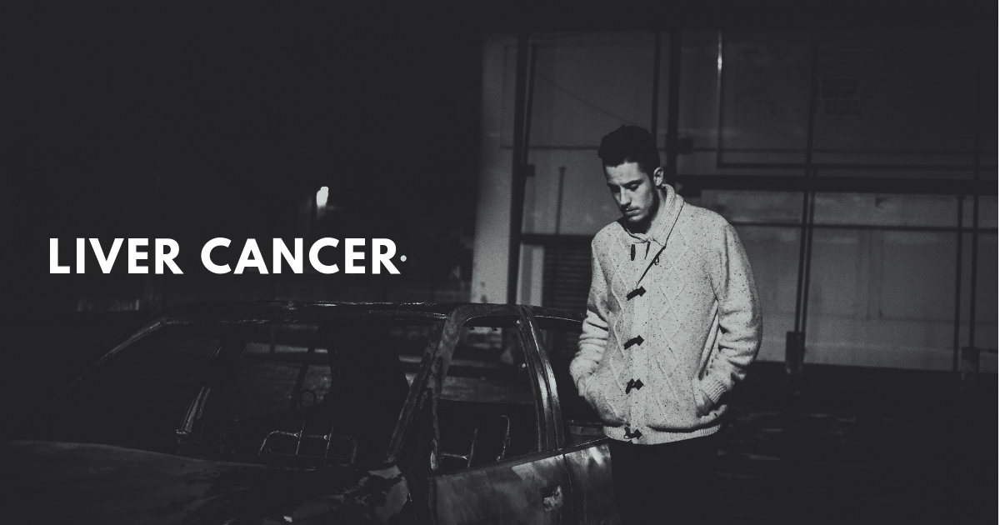

ဘယ်သူတွေက အသည်းကင်ဆာ ဖြစ်နိုင်ခြေ အရှိဆုံးလဲ

အသည်းကင်ဆာဆိုတာ အသည်းကနေ စဖြစ်တဲ့ ကင်ဆာတစ်မျိုးပါ။ တခြားနေရာကနေ ပြန့်ပွားပြီးမှ ဖြစ်လာတဲ့ ကင်ဆာအမျိုးအစား မဟုတ်ပါဘူး။ အသည်းက ဘောလုံးတစ်လုံးခန့် အရွယ်အစားရှိပြီး ဝမ်းဗိုက်ရဲ့ညာဘက် အပေါ်ပိုင်းမှာ တည်ရှိပါတယ်။ သူ့ရဲ့အောက်ဘက်မှာ အစာအိမ် ရှိပါတယ်။
ဘာကြောင့် ဖြစ်ရတာလဲ
အသည်းကင်ဆာ ဘာကြောင့် ဖြစ်ရသလဲဆိုတာ အတိအကျ မသိရသေးပါဘူး။ အသည်းကင်ဆာ စဖြစ်ဖြစ်ချင်း အဆင့်မှာလည်း ရောဂါ လက္ခဏာ မပြတာကြောင့် ချက်ချင်း သတိထားမိဖို့ ခက်ပါတယ်။
ဒါပေမဲ့ ဖြစ်နိုင်ချေများတဲ့ လူတွေကတော့ –
အသည်းရောင် အသားဝါ ဘီပိုး စီပိုး ကူးစက်ခံရသူ
အသည်းခြောက်နေတဲ့သူ
အသည်းရောဂါ ဖြစ်ဖူးတဲ့ မျိုးရိုးရှိတဲ့သူ
အရက် လွန်ကျူးစွာ သောက်သုံးတဲ့သူတွေ
အဝလွန်တဲ့သူတွေ
ဆီးချို သွေးချိုရောဂါ ရှိတဲ့သူတွေ
ခန္ဓာကိုယ်တွင်း သံဓါတ်များနေတဲ့သူ
ရက်လွန်တဲ့ အစားအစာတွေမှာတွေ့ရတဲ့ မှို (အဆိပ်) စားမိသူတွေမှာ အဖြစ်များလေ့ရှိပါတယ်။
လက္ခဏာတွေက ဘာတွေလဲ
အသည်းကင်ဆာ လက္ခဏာတွေကတော့
ဝမ်းဗိုက် ညာဘက် အပေါ်ပိုင်း အောင့်မယ်၊
ဗိုက်အပေါ်ပိုင်းမှာ အလုံး စမ်းမိမယ်၊
ရေဖျဉ်းစွဲမယ်၊ ဗိုက်က တဖြည်းဖြည်း ဆူထွက်လာမယ်၊
အစားအသောက် စားမဝင်တာ၊ ရင်ပြည့်ပြီး စားချင်သောက်ချင်စိတ် မရှိတာ၊
ကိုယ်အလေးချိန်ကျလာတာ၊
ကြွက်သားအားနည်း မောပန်းလွယ်တာ၊
မူးမော ပျို့အန်တာ
အသားတွေ ၀ါလာတာ၊
ဆီး အရောင်ရင့်လာတာ၊
ဝမ်းသွားတဲ့အခါ ဝမ်းအရောင်က အဖြူ ဒါမှမဟုတ် မြေဖြူအရောင်လို ဖြစ်လာတာ
ကိုယ်အပူချိန်တက်ပြီး ဖျားနာတာတွေ ဖြစ်တတ်ပါတယ်။
ရောဂါကို ဘယ်လို ရှာဖွေစမ်းသပ်မလဲ
ရောဂါ ရာဇဝင်နဲ ့အတူ ကနဦး စမ်းသပ်စစ်ဆေးချက်တွေ ၊ သွေးစစ်တာ၊ အယ်ထရာဆောင်း ဓာတ်မှန်၊ သံလိုက် ဓာတ်မှန်များ ရိုက်တာ ၊ အသားစယူပြီး စစ်ဆေးတာတွေ ပြုလုပ်နိုင်ပါတယ်။
ကုသလို့ကော ရရဲ့လား
ကုသနည်း အမျိုးမျိုး ရှိတဲ့အနက် ကျွမ်းကျင် ဆရာဝန်ကြီးတွေနဲ့ တိုင်ပင်ပြီး ရွေးချယ်နိုင်ပါတယ်။
ဓာတ်ကင်ခြင်း
ဓာတုဆေးများဖြင့် ကုသခြင်း
ခွဲစိတ်ကုသခြင်း
အသည်း အစားထိုးခြင်းနည်းတွေကို ရွေးချယ်ကုသနိုင်ပါတယ်။
ကြိုတင်ကာကွယ်ဖို့ ဘာတွေ လုပ်ရမလဲ
အရက် အလွန်အကျွံ သောက်သုံးတာမှ ရှောင်ကြဉ်ပါ။
ကျန်းမာရေးထိခိုက်စေတဲ့ အမူအကျင့်တွေ ရှောင်ကြဉ်ပါ။ ဥပမာ- အိပ်ရေး ခဏခဏပျက်တာ၊ အဆီများ အချိုများ အငန်များတဲ့ အစားအစာတွေ အများကြီးစားတာ၊ ကိုယ်လက်လှုပ်ရှား လေ့ကျင့်ခန်းတွေ မရှိတာ။
ပုံမှန် ကိုယ်အလေးချိန် ရှိအောင် ထိန်းပါ။
ကာကွယ်ဆေး ကြိုတင် ထိုးထားပါ။ ဥပမာ- အသည်းရောင် ဘီပိုး ကာကွယ်ဆေး ထိုးနှံထားသင့်ပါတယ်။
တခြားလူတစ်ယောက်ရဲ့ သွေး ၊ တံတွေး၊ ခန္ဓာကိုယ်ကနေ ထွက်တဲ့ တခြား အရည်တွေနဲ့ ထိတွေ့တာမျိုး ရှောင်ကြဉ်ဖို့ လိုအပ်ပါတယ်။
Source- ဒေါက်တာ အောင်ပြည့်ဖြိုးဦး